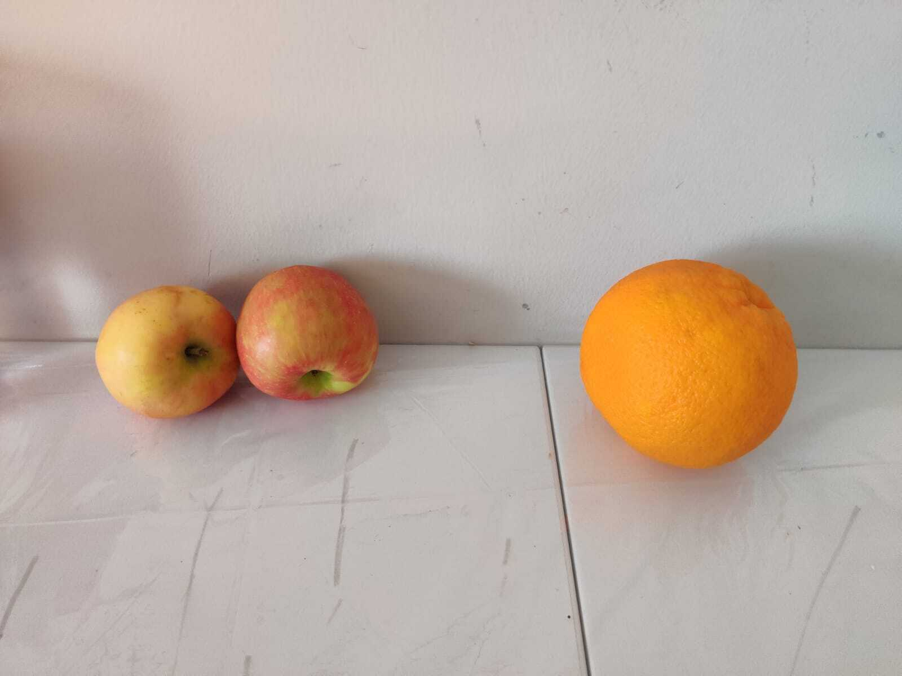
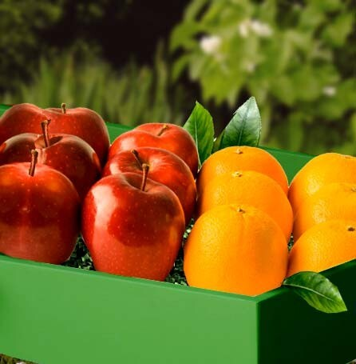
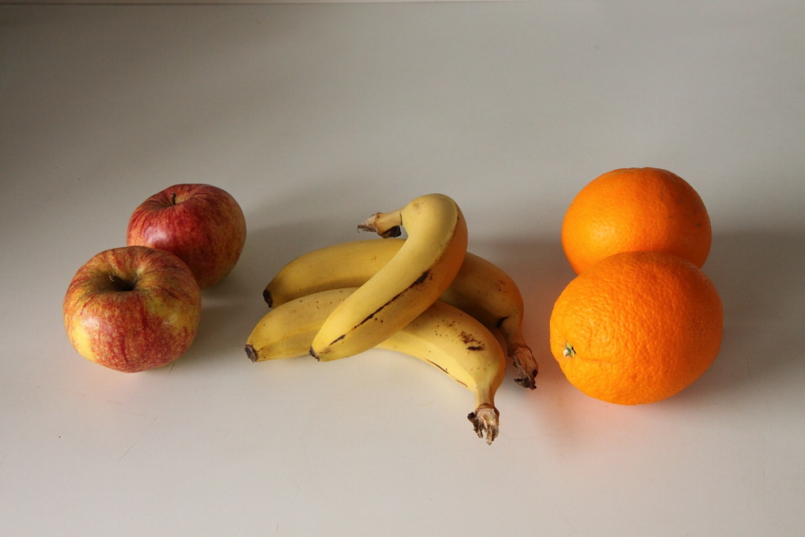
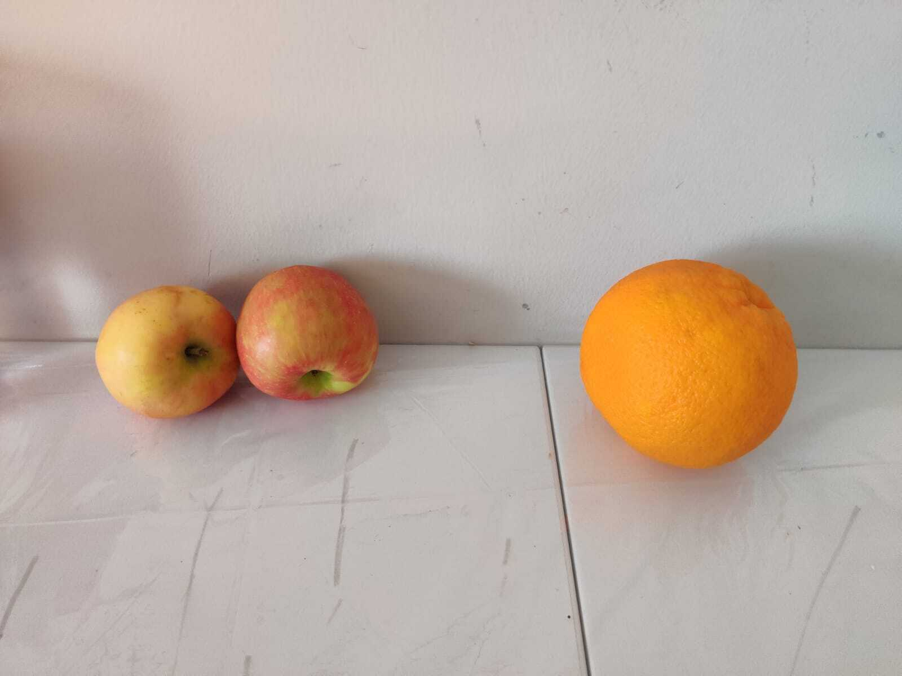
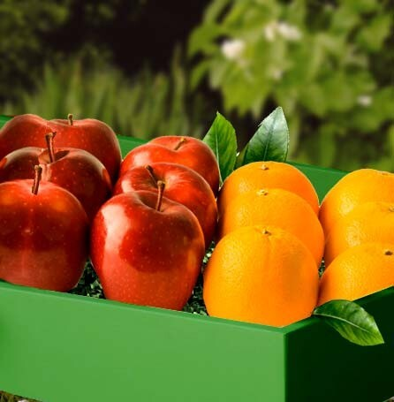
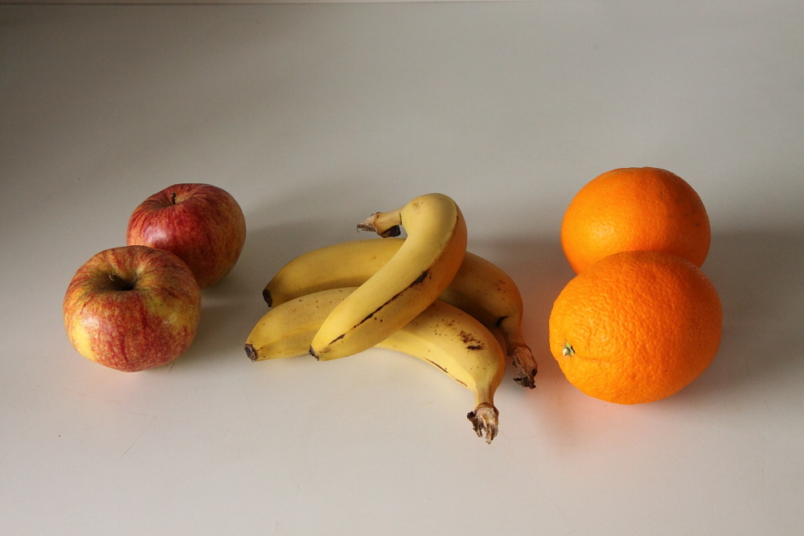
Train:
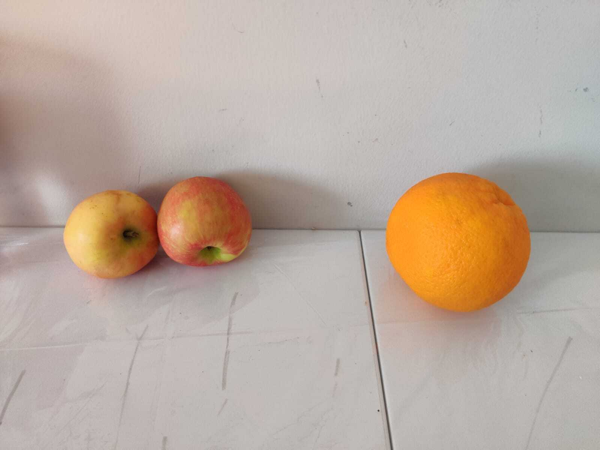
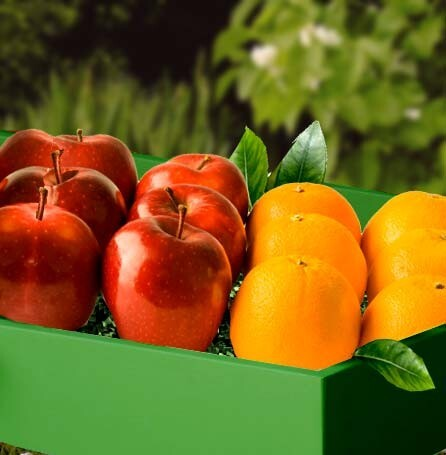
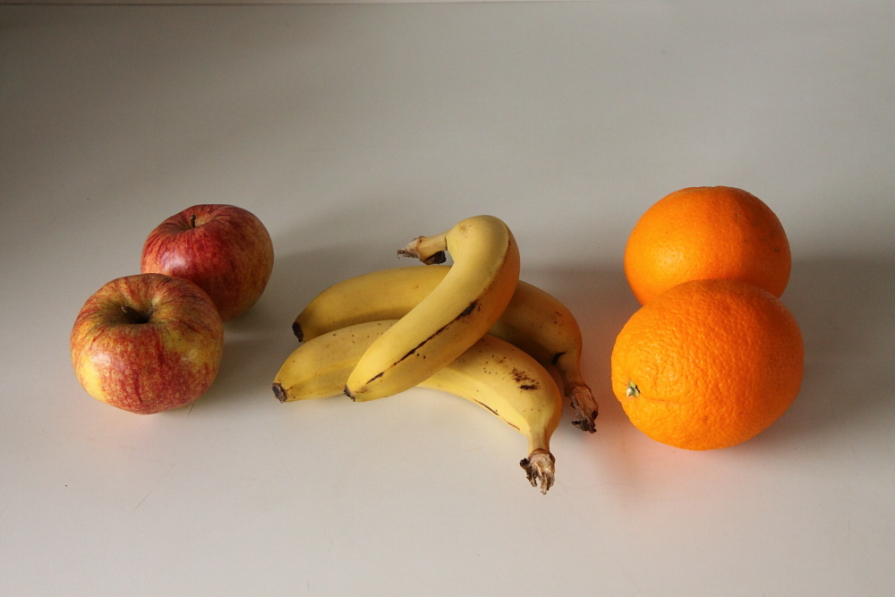
Candidates: 0, 1, 2, 3
 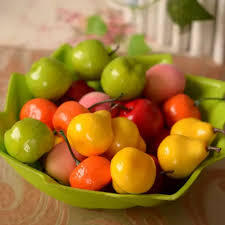
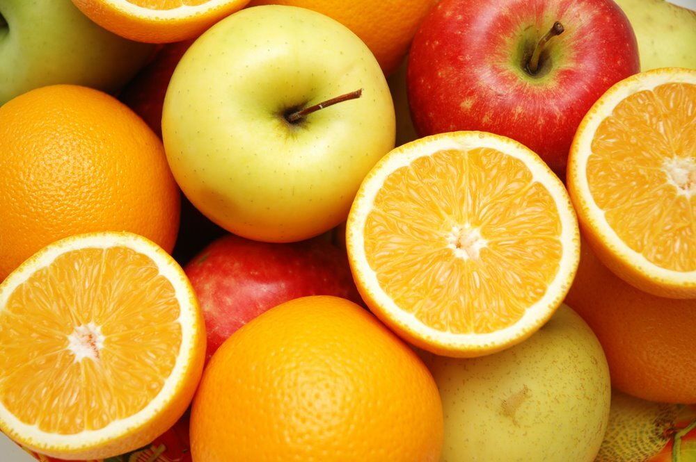
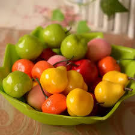
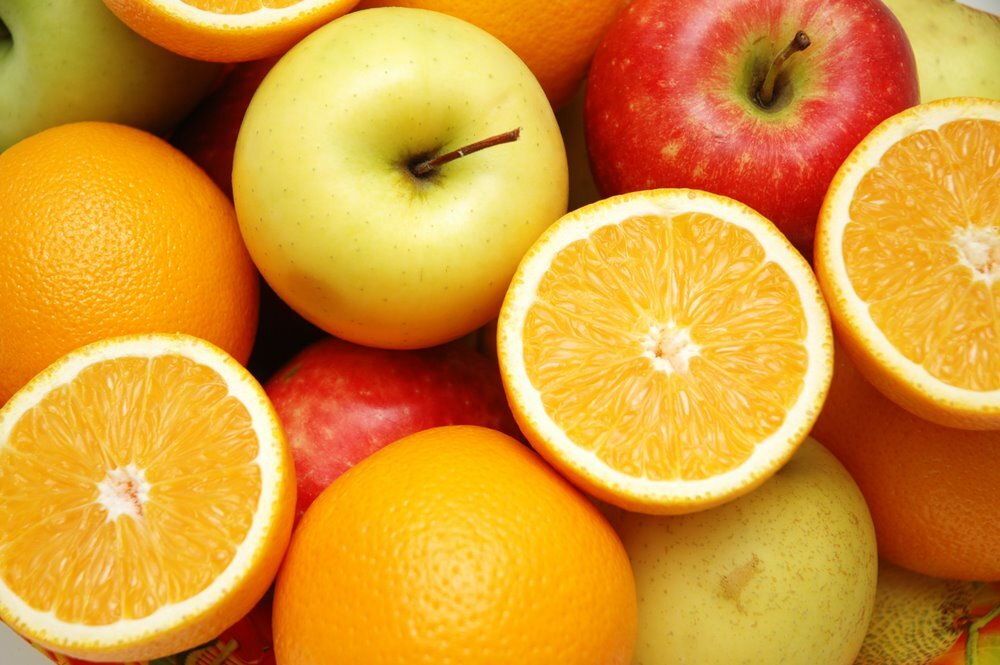
Intended concept: Oranges and apples are kept in clearly separate piles.
Solution provided by tool:
The chosen answer is 0.
The discriminator is: Forall q0: apple!0. Forall q1: orange!1. And(right!1!0)